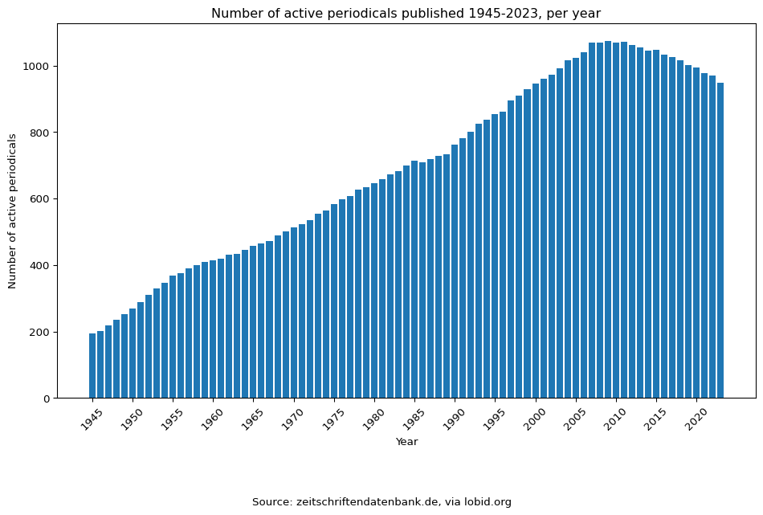
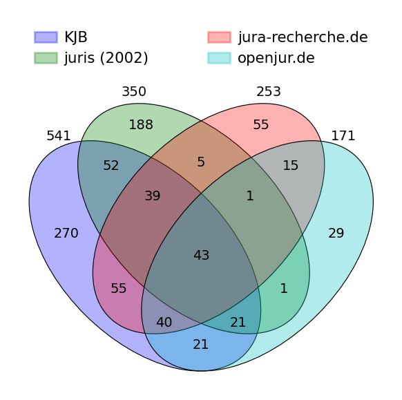
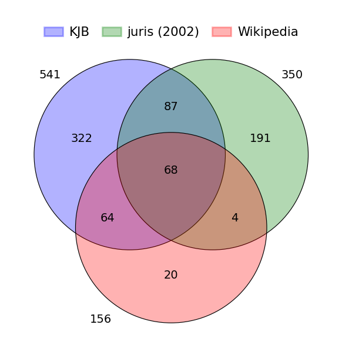
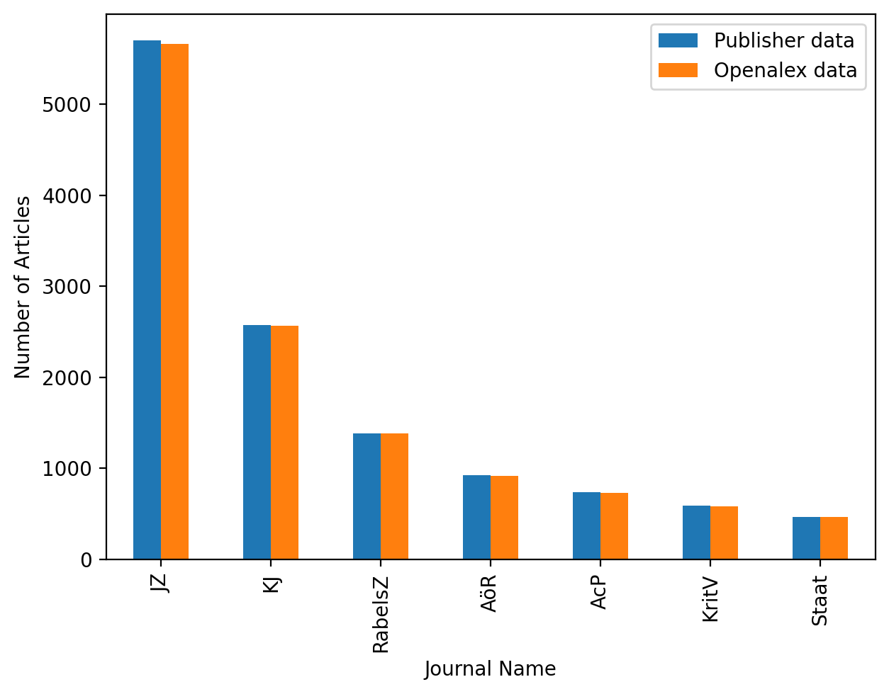
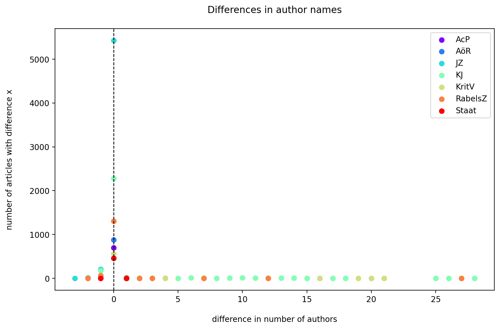
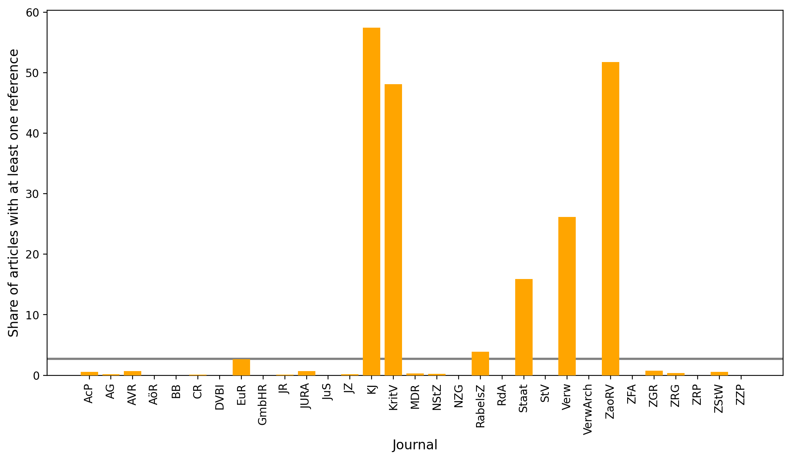
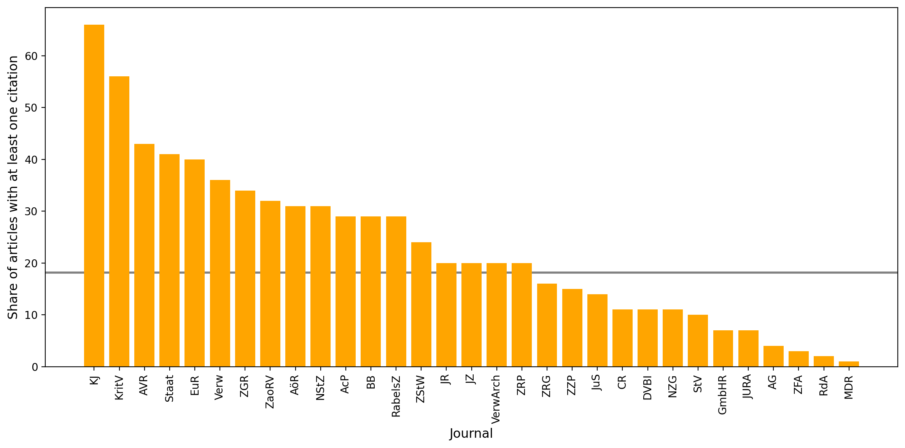
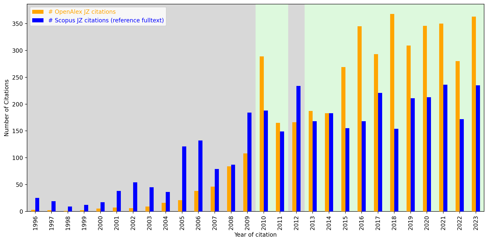
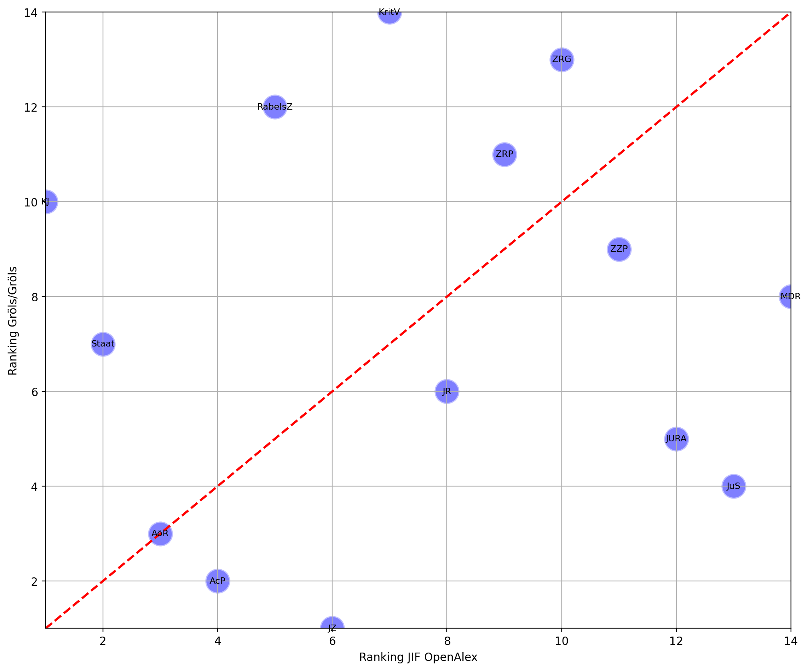

Bibliometric analyses are uncommon in German legal scholarship, often attributed to disciplinary skepticism. However, this paper posits that a more fundamental reason is the lack of adequate data coverage in standard bibliometric databases. We systematically investigate the representation of the German law journal landscape in Web of Science (WoS), Scopus, and OpenAlex. To achieve this, we first establish a benchmark set of 52 representative German law journals based on a 2009 expert survey. We then measure the coverage of these journals within the target databases and assess the quality of the available metadata, focusing particularly on OpenAlex due to its superior initial coverage. Our findings confirm the initial hypothesis: coverage in WoS and Scopus is minimal. While OpenAlex includes a larger proportion of the journals from the benchmark set (32/52) and shows reasonable item-level completeness for a subset checked against publisher data, its metadata quality presents significant limitations. Crucially, affiliation data is sparse, and citation data is almost entirely absent, precluding meaningful citation analysis, impact assessment, or reliable institutional evaluation. We conclude that while coverage is improving, particularly through open platforms like OpenAlex, the current state of bibliometric data, especially the lack of citation information, severely restricts the application of standard bibliometric methods to German legal scholarship. We discuss potential reasons for this gap and suggest focusing on enhancing open data repositories and exploring new methods to generate currently unavailable citation data.
1 Max Planck Institute for Legal History and Legal Theory 2 FIZ Karlsruhe – Leibniz-Institut für Informationsinfrastruktur
Bibliometric and scientometric analyses are common in many fields of research, being used for research assessment, i.e. the measurement of scholarly productivity and impact of institutions, journals, or individual scholars, or, alternatively, for science mapping, the empirical analysis of knowledge production in a particular field of scholarship (Raan 2019). However, this has not been the case for the field of German legal scholarship. One empirical indication of this state of affairs is that, when searching in the full texts of German law journal articles available on JSTOR for the expression “bibliometr*”, there are exactly two hits.1
The reason for this could be attributed to the fact that lawyers treat bibliometric analyses with skepticism. As the 2012 Report on the State of German Legal Scholarship and Education states: „Bibliometric methods are not sufficiently capable of measuring research performance in legal scholarship.“ (Science and Humanities 2012, 54). However, our suspicion is that this situation is equally, if not more so, due to the fact that unlike in other fields of science, there just isn’t enough data available on which bibliometric analyses could be based upon.
The purpose of this paper is to empirically test this proposition. It systematically investigates how the German landscape of law journals is represented in the databases used for bibliometric analyses, in particular the Web of Science, Scopus, and OpenAlex.
This research question is subdivided in three sub-questions, which are discussed in separate parts of this paper after shortly surveying previous work. The first question asks what exactly we are looking for: what set of publications represents the German law journal landscape? Here, were are not aiming at completeness, but rather at a a sample that is sufficiently large (but not too large) and representative enough to make our observations valid. Based on a previous study that surveyed German law professors to construct a ranking of law journals (Gröls and Gröls 2009), we propose what a benchmark set of German law journals. Once the set has been established, the second question how much data exists for this set in our target databases. The third question is about data quality: it is not enough to observe the pure quantity of records found for our set - we also have to investigate how complete and accurate this data is, and what questions can be answered based on it, and which cannot.
Not surprisingly, we conclude that is that the data bears out the initial hypothesis. While the bibliometric coverage of knowledge production in the German legal domain is getting better in recent years, mainly because of the appearance of new players in the market, it is generally still very limited. As most German law journal do not fit the selection criteria of the commercial vendors, the more open offerings such as OpenAlex are the only viable candidate. However, the available metadata is found wanting. In particular, we observe a general lack of citation data. The conclusion sketches some reasons for why this is so and proposes ways forward.
This paper is a interdisciplinary collaboration between two domain specialists (Boulanger, Fejzo) and a bibliometrician (Rimmert), and thus tries to combine different epistemic interests: on one hand, in those questions that require the data we are looking for, and on the other, the questions that the data poses itself. We document all queries and the code we used to produce the tables and graphs in the following sections in our GitHub repository.2
2. Previous and related work
As far as we can see, this is the first study of this kind. Earlier research had put its interest more in the way legal texts cite other legal material, such as the characteristics of references to legal provisions in judgments (Wagner-Döbler and Philipps 1993) or the networks that can constructed from references between legal texts (Coupette 2019). For reasons that we will return to in the conclusion, the bibliometric analysis of legal scholarship itself has never become a subject of scholarly attention. In contrast, when looking outside the German legal domain, there have been numerous studies using bibliometric methods to analyze knowledge production of various disciplines, such as, for example of Digital Humanities (Tang, Cheng, and Chen 2017) or Scientometrics itself (Liu et al. 2023).
However, we have not been able to identify other studies - although they might exist - which measure the quality of the bibliometric data on a discipline, since, as we will see, this exercise requires data outside the traditional databases which be used as a benchmark with which query results can be compared. In most cases, the data quality of databases such as the Web of Science or Scopus is simply assumed - a trust that might not be warranted, in particular in scientific fields where the coverage of these databases is sketchy. This has been empirically shown for the Social Sciences and Humanities (SSH) (Hicks 1999; Gläser and Oltersdorf 2019).
In addition, such studies point out that in the fields in SSH, a large part of the research is published as monographs or parts thereof. These publications are even less present in databases which focus on journals, the main form of scientific communication in the natural sciences (Hammarfelt 2016). This is also true for German legal scholarship. However, this plays no role for the analyses in this paper, as our explicit focus is on law journals.3
3. Constructing a benchmark set of German law journals
The first task in measuring the coverage of German law journals in bibliographic databases is to determine which of the journals to look for, i.e. to create a list of journals that represent the category “German law journals”. In this endeavor, we do not aim for completeness. For the purpose of this study, it will suffice to have a sample which is sufficiently large to be representative of the field. At the same time, the selection must be small enough, so it is possible to check and enrich the dataset with additional metadata (for example, a persistent identifier such as the ISSN) with a reasonable amount of effort. This will allow us to define a set of journals for which, at a minimum, data has to exist in sufficient quality in order to make statements about knowledge production in German legal scholarship. This does not mean that journals that are not in this list are not important for the discipline. In fact, as it will become clear, our selection methodology forces us to omit any journal founded after 2009. We also make no statement on the difference of quality of those journals that make it on the list compared to those which do not. In particular, we are not interested in finding or providing a metric similar to the “journal impact factor” of German law journals. We are only interested in the quality of bibliometric data on a representative and relevant subset of those journals. Similarly to a “gold standard” dataset for evaluation purposes, our benchmark set serves as a yard stick for our observations. However, unlike a gold standard, the set does not make any claim to be “correct” in any sense other than being “good enough” data for the given purpose of evaluation.4
We explore two ways in which such a set could be assembled. The classification-based approach requires no prior knowledge of the field and promises a data-driven way of generating such a set. Instead, it relies on the presence of databases which provide sufficiently fine-grained classifiers in the article metadata.5 It seems not unreasonable to assume that, given a database of journals which has labels for the subject matter “law” and the language attribute “German”, one would be able derive a list of German law journals. This would include all journals with German language content, i.e., include journals from Germany, Austria, Switzerland and other legal publications in German. This list could then be filtered further down to journals that cover the Federal Republic of Germany or any other country or combinations of countries. However, as we will discuss below, even if this would work, such an approach will always have at least two problems: a) an additional metric would be needed that would allow to limit this list to the really relevant and representative journals and, even more important, b) the list might be affected by a selection bias in the data from which it was derived. We will therefore argue that we need an alternative approach which is based on domain expert knowledge and which might be more reliable for our purposes.
Classification-based selection
In the following, we will test, first, the German journal database (Zeitschriftendatenbank), and afterwards the bibliometric databases Web of Science, Scopus and OpenAlex as a source for deriving our list.
The “Zeitschriftendatenbank”
The go-to database for metadata on German journals is the Zeitschriftendatenbank (ZDB, https://zdb.de). Its entries can be searched for the Dewey Decimal Category (DDC) 340 for “Law” and the language label for German.
In order to test this approach, we ran a query using these parameters, using the lobid.org linked-data gateway to the ZDB, resulting in a list of 7406 journals. Many of these journals are historic and do not matter for our analysis. Limiting the time period to after 1945, we still count 1692 journals. Figure 1 shows a plot of the number of journals being actively published in any given year between 1945 and 2023. However, many of them represent publications that would not qualify as “law journals”, for example, local administrative gazettes or other official publications.
Code
import matplotlib.pyplot as pltimport pandas as pddf = pd.read_csv('../data/zdb/zdb-ger-law-issn-1945-2023-years.csv', encoding='utf-8')plt.figure(figsize=(10, 6))plt.bar(df['year'], df['number_of_journals'])plt.xticks(df['year'][df['year'] %5==0], rotation=45)plt.xlabel('Year')plt.ylabel('Number of active periodicals')plt.title('Number of active periodicals published 1945-2023, per year')plt.figtext(0.5, -0.1, "Source: zeitschriftendatenbank.de, via lobid.org", ha="center", fontsize=10)plt.tight_layout()plt.show()

Figure 1: Number of active serial publications classified as DDC 340 (‘law’) and language ‘German’ in the ZDB, per year, via lobid.org
To narrow down this list further would require to find ways to decide, based on metadata, a), which journals are relevant for Germany, and b) which of those are “law journals”, i.e. contain legal scholarship rather than just administrative or legislative communications. As the lack of a suitable metadata category meant that we would have had to to identify and test proxy variables–a rather complex matter–, we did not pursue this approach further.
Bibliometric Databases: Web of Science, Scopus, OpenAlex
Instead, the next experiment was to probe the bibliometric databases themselves to see whether, based on the available metadata, we could generate a methodologically controlled list of journals. In theory, this could yield a better selection than what we retrieved from the ZDB, since the bibliometric databases aim to focus on research and are less likely to contain non-scholarly communications. The reason for this selection of these three databases (and the exclusion of others, such as Lens, Semantic Scholar or dimension.ai) is that they are available in a normalized schema, at the Kompetenznetzwerk Bibliometrie (Schmidt et al. 2024).6
In order to achieve our goal of creating a list of German law articles, we have to define queries to execute on each data source. In terms of classification each source uses a different system: WoS and Scopus use journal-level classifications, assigned to the item in the XML files, whereas OpenAlex provides an item-specific classification.7 Language is item-specific in all three databases.
We wanted to find journals which have article items that belong to the “law” category in the respective classification system, and of which the majority of articles are flagged as being in German. The selection criteria we chose was that a journal would be considered part of our sample if at least 10 articles had a subject category: Law and if at least 10% were classified as “Law” and “German”. We chose to have both restrictions here because there are some exceptional cases of journals with a very low number of indexed articles, which points to gaps or errors in the data. We therefore did not want to include these exceptional cases where a very few German law articles would already fulfill the quota.
Using these criteria, we probed the Web of Science Core Collection (we did not have access to WoS’ Emerging Sources Citation Index). We found 250 journals which contained articles classified as ‘Law’.8 However, as Table 1 shows, only two of those met the threshold of 10%.
Table 1: Articles in WoS Core Collection categorized “German” and “Law”
Journal
Num. Art.
Num. German+Law
%
1
kriminologisches journal
79
74
0.94
2
tijdschrift voor rechtsgeschiedenis-revue d hi...
279
44
0.16
In Scopus, running a query with the above parameters produces a list of 23 journals.9 The results show a disproportionate frequency of journals with a social science focus (criminology, criminal psychology, sociology of law) or legal history (Table 2).10 This is not surprising, since journals that publish research on law which uses social scientific methods, such as criminology, tend to gravitate towards an international audience and thus would also try to be included in bibliometric services such as Scopus, although this does not explain why they are not in the Web of Science. However, this set of journal does seem to correspond with the methodological focus of German jurisprudence, which focuses on doctrinal legal research (Science and Humanities 2012, 8).
Table 2: Articles in Scopus categorized “German” and “Law”, sorted by relative frequency
Journal
Num. Art.
Num. German+Law
%
1
Kriminalistik
2601
2599
1.00
2
Osterreichisches Archiv fur Recht und Religion
168
166
0.99
3
Verwaltung
115
114
0.99
4
Forensische Psychiatrie, Psychologie, Kriminol...
523
513
0.98
5
Zeitschrift der Savigny-Stiftung fur Rechtsges...
398
373
0.94
6
Kriminologisches Journal
207
184
0.89
7
Monatsschrift fur Kriminologie und Strafrechts...
323
284
0.88
8
Deutsche Lebensmittel-Rundschau
1739
1478
0.85
9
Zeitschrift der Savigny-Stiftung fur Rechtsges...
603
500
0.83
10
Zeitschrift der Savigny-Stiftung fur Rechtsges...
120
93
0.78
11
Recht und Psychiatrie
369
284
0.77
12
Zeitschrift fur Rechtssoziologie
89
63
0.71
13
Kriminologie
94
66
0.70
14
Jusletter IT
708
446
0.63
15
Archiv fur Rechts- und Sozialphilosophie
273
159
0.58
16
Rechtsgeschichte
309
174
0.56
17
Zeitschrift fur Europarechtliche Studien
107
51
0.48
18
Zeitschrift fur Auslandisches Offentliches Rec...
143
49
0.34
19
Legal History Review,Tijdschrift voor Rechtsge...
265
68
0.26
20
Journal on European History of Law
283
74
0.26
21
Annales de la Faculte de Droit d'Istanbul
74
11
0.15
22
Credit and Capital Markets
164
18
0.11
23
Journal of Juristic Papyrology
180
18
0.10
OpenAlex is one of the new non-commercial competitors to the WoS and Scopus. In contrast to the very restricted inclusion criteria of those databases,11 the successor to “Microsoft Academic Graph” has a much more liberal approach to what to index. This is immediately visible in the result of our query, which returns 323 individual journals.12 When checked from the perspective of a domain specialist, the list seems to include quite a number of journals that seem relevant, although the top-20 list (ranked by the share of German law articles) contains both relevant journals as well as some that are very specialized (Table 3).
Table 3: Articles in OpenAlex categorized “German” and “Law”, sorted by relative frequency, top 20
Journal
Num. Art.
Num. German+Law
%
1
Zeitschrift für Beihilfenrecht
253
191
0.75
2
Jura - Juristische Ausbildung
24
17
0.71
3
Zeitschrift für Informationsrecht
1963
1403
0.71
4
Europaische grundrechte zeitschrift
334
236
0.71
5
Computer Und Recht: Forum für die Praxis des R...
2332
1664
0.71
6
Datenschutz und Datensicherheit
20
14
0.70
7
Jus: Juristische Schulung
1487
1030
0.69
8
Europaisches wirtschafts und steuerrecht
382
260
0.68
9
Schweizerisches Zentralblatt für Staats- und V...
102
69
0.68
10
WUW : Wirtschaft und wettbewerb = Concurrence ...
767
517
0.67
11
Zeitschrift für Zivilprozess
483
325
0.67
12
Jahrbuch Eigentum und Urheberrecht in der Demo...
21
14
0.67
13
ZG : Zeitschrift für Gesetzgebung
377
254
0.67
14
Österreichische Zeitschrift für Kartellrecht
502
337
0.67
15
Göttinger Rechtszeitschrift
167
109
0.65
16
Zeitschrift der Verwaltungsgerichtsbarkeit
1683
1074
0.64
17
STRASSENVERKEHRSRECHT
113
72
0.64
18
Europaische zeitschrift für wirtschatsrecht, EUZW
863
555
0.64
19
Europarecht
1246
786
0.63
20
Frankfurt Law Review
16
10
0.63
In sum, based on the number of results and a intuition backed by domain knowledge, OpenAlex seems to provide a more promising dataset for our purposes. However, the how can we know we are not missing important journals which, for random reasons, have not been indexed in OpenAlex? And even if we knew that all relevant journals were present, we would not know how to create our sample because OpenAlex does not provide a reliable way of determining which journals out of the 300+ journals found are relevant and/or representative.13
Constructing a benchmark set based on domain expertise
The alternative approach is to rely on expert knowledge. In this case, we need to know how legal scholars or other people with a similar expertise of the domain (such as law librarians) would construct the set of journals that we are looking for. In contrast to the previous approach, this involves an element of human judgment. However, this seems to be adequate since such a list is not a “fact” comparable to a mathematical set. It is therefore not decisive for our purposes that such a set might be incomplete or that different people might have different opinions about what should be in that set, as long as we have a viable list of journals that represents something like the “least common denominator” of expert opinions, generated in a methodologically valid way.
Curated lists of law journals available online
The internet offers a number of lists of German law journals. They are curated in the sense as they have been assembled by (usually unnamed) domain experts of varying credentials for pedagogical or other reasons. For the purpose of this article, we scraped the contents of the following lists and converted them into CSV data:14
“Karlsruher Juristische Bibliographie, Verzeichnis der für Periodika verwendeten Abkürzungen”: a list of journals curated by the publisher Beck15, with 561 entries;
juris: Verzeichnis der ausgewerteten juristischen Periodika (Aufsätze): This is the list of journals ingested by the commercial legal information platform “Juris” for their database on law journal articles. The Bayrische Staatsbibliothek has a PDF from 200216 which we used to extract a list of 383 entries;
OpenJur - Juristische Fachzeitschriften: openJur17 is a database for German jurisdiction and legislation operated by openJur gGmbH, a non-profit organization under German law. It provides a list of German law journals with 173 entries;
Jura Recherche: The internet page https://jura-recherche.de provides a research interface for law students. Its list has 252 entries.
There are many other lists that could be used. The point is here that, counter-intuitively, the examples surveyed here already vary widely in the selection of journals that they contain. This is demonstrated by drawing a 4-set Venn diagrams based on matching the journal abbreviations of the journals in the lists (Figure 2).
Code
import pandas as pd from venny4py.venny4py import venny4py sets = {'KJB': '../data/web_lists/karlsruher-juristische-bibliographie-2024-12-13.csv','juris (2002)': '../data/web_lists/juris-ingested-journals-2002.csv','jura-recherche.de': '../data/web_lists/jura-recherche.de-2024-12-13.csv','openjur.de': '../data/web_lists/openjur.de-2024-12-13.csv'}abbrevs = {}for set_name, file_path in sets.items(): df = pd.read_csv(file_path) abbreviations = df['abbreviation'].dropna().str.lower().tolist() abbrevs[set_name] =set(segment.lower().strip() for abbrev in abbreviations for segment in abbrev.split(',') if segment.strip())venny4py(sets=abbrevs, out="tmp")

Figure 2: Intersection (by abbreviation) of online journal lists
The lists share a relatively small number of abbreviations (43). The number of found co-occurrences could probably be increased somewhat by matching the entries of the list with unique identifiers such as the ISSN, which would eliminate incorrect matching, but probably not much.
In any case, we did not pursue this approach further. While lists like the ones identified above are interesting data sources themselves, they do not provide a solid basis for our analysis, at least not in a straightforward way. On one hand, the intersection of all lists is hinges on accidental factors since we have no way of knowing what the selection criteria for any of the above lists are. On the other hand, a union of all lists could help avoid selection biases. However, it would have a size that would to large to be useful (>900), and, as in our previous experiments, there would be no clear selection criteria by which to filter the list down to a more manageable size.
Another option is to check open data sources such as Wikipedia and Wikidata to see if they provide structured metadata. In fact, Wikipedia has a category called “Juristische Fachzeitschrift (Deutschland)” (Journal specialized on legal matters (Germany)18, which assembles all Wikipedia pages that self-categorize as a law journal.19. When exporting the category,20, the result set contains 286 entries. As this data contains Wikidata QIDs, ISSN matching can be done automatically, which results in a list of 147 journals having an ISSN.
When comparing this list with the KJB and juris lists by abbreviation (Figure 3), we again find a relatively small intersection (68 abbreviations) that cannot be caused solely by data errors.21
Code
import pandas as pd from venny4py.venny4py import venny4py sets = {'KJB': '../data/web_lists/karlsruher-juristische-bibliographie-2024-12-13.csv','juris (2002)': '../data/web_lists/juris-ingested-journals-2002.csv','Wikipedia': '../data/wikipedia/category-law-journal-germany-with-issn.csv'}abbrevs = {}for set_name, file_path in sets.items(): df = pd.read_csv(file_path) abbreviations = df['abbreviation'].dropna().str.lower().tolist() abbrevs[set_name] =set(segment.lower().strip() for abbrev in abbreviations for segment in abbrev.split(',') if segment.strip())venny4py(sets=abbrevs, out="tmp")

Figure 3: Intersection (by abbreviation) between KJB, juris and Wikipedia entries
Be that as it may, for our purposes, this list has similar problems as the previous ones: as this list hinges on the accidental fact whether an entry exists on a journal or not, and relies on the self-categorization, its representativeness cannot be guaranteed. And as before, the data itself does not provide any way of ranking the results to give us the most relevant titles.
Expert Ranking: Gröls/Gröls (2009)
Instead, for generating our benchmark set, we relied on a 2009 study by Marcel and Tanja Gröls (Gröls and Gröls 2009), who ranked law journals on the basis of a survey among law professors. Even though the study is more than 15 years old and has - as far as we can see - not yet been updated in later studies, it is still a useful source of data for our purposes, as we will explain below.
As the authors point out, previous attempts at ranking German law journals through empirical means remained scarce (497). Therefore, the authors decided on a methodological setup derived from similar studies in economics and business administration (489). In short, their study consists of different rankings of German law journals generated by surveying the individual assessment of German law scholars. First, 1500 email addresses of German law professors, both current and former, as well as research associates were identified by reviewing the web pages of 45 German universities and academic institutions. Next, these individuals were contacted via email and asked to fill out the survey. 248 responses were received, marking a 16,5% response rate (490).
The survey asked its participants to name their area of expertise, rank five journals of that area they perceived to be of the highest quality, and additionally, to name and rank five journals that are more general in scope and not bound to a specific subdiscipline, again according to perceived quality (490). Journals over a certain counting threshold were then assigned scores based on their place in the participant’s ranking as well as the participant’s academic status (professors were weighted stronger than research associates) and an ‘expert factor’ determined by the individuals amount of publications over the last three years, thus creating two different kinds of rankings: one for journals considered general in nature and several others according to specific subdisciplines (491-492).
As this distinction is irrelevant to our purposes, we aggregated the different rankings into one list of 52 journals, thereby constituting our benchmark set (Table 4).
Table 4: List of 52 most highly ranked law journals according to Gröls/Gröls (2009), sorted by abbreviation
Abbreviation
Title
1
AG
Die Aktiengesellschaft
2
AVR
Archiv des Volkerrechts
3
AcP
Archiv für die civilistische Praxis
4
AuR
Arbeit und Recht
5
AöR
Archiv des öffentlichen Rechts
6
BB
Betriebs-Berater
7
CR
Computer und Recht
8
DB
DER BETRIEB
9
DOV
Die öffentliche Verwaltung
10
DStR
Deutsches Steuerrecht
11
DVBI
Deutsches Verwaltungsblatt
12
EuGRZ
Europäische Grundrechtezeitschrift
13
EuR
Europarecht
14
EuZW
Europäische Zeitschrift für Wirtschaftsrecht
15
FamRZ
Zeitschrift für das gesamte Familienrecht
16
GA
Goltdammers Archiv für Strafrecht
17
GmbHR
GmbH-Rundschau
18
JA
Juristische Arbeitsblätter
19
JR
Juristische Rundschau
20
JURA
Juristische Ausbildung
21
JZ
JuristenZeitung
22
JuS
Juristische Schulung
23
KJ
Kritische Justiz
24
KritV
Kritische Vierteljahresschrift für Gesetzgebun...
25
MDR
Monatsschrift für Deutsches Recht
26
NJW
Neue juristische Wochenschrift
27
NStZ
Neue Zeitschrift für Strafrecht
28
NVwZ
Neue Zeitschrift für Verwaltungsrecht
29
NZA
Neue Zeitschrift für Arbeitsrecht
30
NZG
Neue Zeitschrift für Gesellschaftsrecht
31
NZS
Neue Zeitschrift for Sozialrecht
32
RabelsZ
Rabels Zeitschrift für ausländisches und inter...
33
RdA
Recht der Arbeit
34
StV
Der Strafverteidiger
35
Staat
Der Staat
36
StraFo
Strafverteidigerforum
37
Verw
Die Verwaltung
38
VerwArch
Verwaltungsarchiv
39
WM
Zeitschrift für Wirtschafts- und Bankrecht
40
ZEuP
Zeitschrift für europäisches Privatrecht
41
ZFA
Zeitschrift für Arbeitsrecht
42
ZGR
Zeitschrift für Gesellschaftsrecht (Zeitschrif...
43
ZHR
Zeitschrift für das gesamte Handels- und Wirts...
44
ZIP
Zeitschrift für Wirtschaftsrecht
45
ZIS
Zeitschrift für Strafrechtsdogmatik
46
ZRG
Zeitschrift der Savigny-Stiftung fur Rechtsges...
47
ZRP
Zeitschrift für Rechtspolitik
48
ZStW
Zeitschrift für die gesamte Strafrechtswissens...
49
ZZP
Zeitschrift für Zivilprozess
50
ZaoRV
Zeitschrift für ausländisches offentliches Re...
51
ZeuP
Zeitschrift für europäisches Privatrecht
52
wistra
Zeitschrift für Wirtschafts- und Steuerstrafrecht
As stated earlier, one possible objection against using the study by Gröls & Gröls for our benchmark set is its age. Specifically, there could be the risk of missing relevant journals established after 2009 or not accounting for the fact that more recent rankings would vastly diverge from one fifteen years ago. In fact, for domain experts it seems an obvious problem that journals as e.g. Rechtswissenschaft (est. 2010) or Recht und Zugang (est. 2020), are necessarily not included in our gold standard and thus are not part of our study.
However, we believe that the utility of using Gröls/Gröls data outweighs those objections for two reasons. First, similar to the situation described by Gröls/Gröls in 2009, there is simply not much alternative research to be found that would be more recent and at least equally suited for generating our set. In other words, having the risk of incomplete data is more favorable than no data at all. Second, we assume the market for German law journals to be a fairly static one, thus deeming it highly likely that a more recent ranking would more or less include the same publications as fifteen years ago, with the exception of the above mentioned journals.
Coverage of benchmark set journals in other sources
How is the benchmark set derived from the study of Gröls/Gröls (2009) reflected in the other data sources we have surveyed so far?
Bibliometric Databases
If we compare the benchmark set with the lists we created with a classification-based search in the databases Web of Science, Scopus and OpenAlex (Table 5), we can make the following observations:
None of the 2 journals we found in the Web of Science is in the Gröls/Gröls set.
Among the 23 journals we found in Scopus, 5 are contained in the set.
In Openalex we found 323 journals, 32 of which are contained in the set. The remaining 20 are not contained in OpenAlex at all, which means no other search criteria would have found them.
Code
import pandas as pdgs_size = pd.read_csv("../data/gold/gold-groels-groels-2009.csv").shape[0]data = []for db in ['wos', 'scp', 'openalex']: df = pd.read_csv(f"../data/kb_data/202408/eva_{db}_de_law_journals_trivial_search_result_202408.csv") hits = df[df['in_goldstandard'] ==True].shape[0] recall =round(hits/gs_size, 1) data.append([db, hits, recall])df = pd.DataFrame(data, columns=['Database', 'Benchmark set journals', 'Recall'])df.index = df.index +1df
Table 5: Coverage of benchmark set journals in the bibliometric databases
Database
Benchmark set journals
Recall
1
wos
0
0.0
2
scp
5
0.1
3
openalex
32
0.6
Expressed in a more formal metrics, the recall of our benchmark set against the classification-based search22 is 0 for WoS, 0.1 for Scopus and 0.6 for OpenAlex. We cannot really compute a precision here, which would require some sort way of determining journal relevance. Our search returned journals having the feature “law” and “German”, but with no indication of their quality or impact. In contrast, our benchmark set is based on their perceived ‘relevance’ among the population of legal scholars in the survey. In standard bibliometric analysis, the ‘impact factor’ would be derived by measuring the number of references to articles in that journal (citation count), but this is not really possible because of the lack of reliable citation data, as we show in section 4.2.23
Next, we measured how well the benchmark set journals is covered in the bibliometric databases. This question is a somewhat different from the previous as the comparison does not depend on any selection based on metadata in those databases. While the first approach is concerned with the equivalence of common features (“law” , “German”), the second addresses the coverage of these recognized sources within the databases in question. Unsurprisingly, the results confirm our finding that OpenAlex is the only bibliometric database that is worth exploring further. Figure 4 shows the coverage of our benchmark set in the Web of Science, Scopus, OpenAlex and CrossRef24 that visually makes this clear.
Figure 4: Coverage of the benchmark set in bibliometric databases
Internet lists
For completeness, we also checked how well the benchmark set aligned with the online lists: Matching again on the journal abbreviations (with all the associated problems) we can see the overlaps of the benchmark set with those sources in Figure 5:
Figure 5: Intersections between the benchmark set and online lists
While one would have expected close to 100% inclusion of our gold dataset in the various lists, this is not the case. The results vary from 61% (openjur.de) to 82% (jura-recherche.de).
4. Coverage on item and metadata level and quality of metadata
As stated above, only one of the three bibliometric databases taken into account seems to cover a sufficient amount of journals considered ‘relevant’ from experts in the field. For this reason, we concentrate on OpenAlex in the following.
Up to this point, our analysis was restricted to the coverage on journal level, where we found that most of the journals from our benchmark set are covered by OpenAlex. For bibliometric analyses, this coverage on journal level is not sufficient. In addition to the pure existence of the journal in the database, the coverage quality is decisive, which is only given if a) all articles of the journal exist in the database (coverage on article level), and b) metadata of articles should be available (coverage on metadata level) in a sufficient quality.
As our journal benchmark set does not help in these respect, a further - item based - benchmark set is needed. For this, we contacted a number of publishers of journals in the journal benchmark set and asked for their original data. Three publishers provided data, for a total of seven journals:
Mohr Siebeck: JuristenZeitung; Archiv fur die civilistische Praxis; Rabels Zeitschrift für ausländisches und internationales Recht; Archiv des öffentlichen Rechts
A subset of the available data, limited to publications up to and including the year 2023, was selected for the purpose of evaluating the coverage and metadata quality of the dataset at both the article and metadata levels. Due to incomplete data availability, in particular for older publication years, only the years for which data was available were included in the comparisons.
4.1 Item level coverage
a. Number of articles per journal (all years)
In a first step we take a look at item level coverage and simply compared the number of publications in OpenAlex with the number of publications in the publisher data. This looks quite promising: numbers are nearly equal (Figure 6).
Code
import pandas as pdimport matplotlib.pyplot as pltdf = pd.read_csv('../data/kb_data/202408/eva_all_publisherdata_202408.csv')# Calculate the counts for each journal and year columnjournal_counts_pubyear = df['journal_name'][df['pubyear'].notna()].value_counts()journal_counts_pubyear_openalex = df['journal_name'][df['pubyear_openalex'].notna()].value_counts()df_plot = pd.DataFrame({'Publisher data': journal_counts_pubyear,'Openalex data': journal_counts_pubyear_openalex})df_plot.plot(kind='bar', stacked=False)plt.xlabel('Journal Name')plt.ylabel('Number of Articles')plt.show()

Figure 6: Comparison of article count between publisher data and OpenAlex
b. Checking article completeness via DOI matching
Simply having almost equal quantities of articles in either set isn’t adequate. It is necessary to ensure that the identical elements exist in both. If this isn’t done, some items may be absent in one set and others in another, leading to an equal article count but differing sets. Thus, as a subsequent step, we correlated the articles from OpenAlex against those from publisher data, utilizing the DOI available in both sources. Table 6 shows the number of DOIs which are only found in OpenAlex when categorized by journal with the earliest and the most recent year of missing DOIs. When compared to the overall quantity of articles, these numbers are negligible, which means that in terms of the DOI coverage, the data quality in OpenAlex seems good.
Code
import pandas as pdfrom pandasql import sqldfversion ="202408"df_items = pd.read_csv(f'../data/kb_data/{version}/eva_all_openalex_items_{version}.csv', low_memory=False)df_pub = pd.read_csv(f'../data/kb_data/{version}/eva_all_publisherdata_{version}.csv', low_memory=False)df = sqldf(""" SELECT abk as 'Journal', COUNT(*) as 'Missing DOIs', MIN(pubyear) as 'Min year', MAX(pubyear) as 'Max Year' FROM df_items WHERE LOWER(doi) NOT IN (SELECT LOWER(doi) FROM df_pub) AND abk IN (SELECT journal_name FROM df_pub) GROUP BY abk;""")df.index = df.index +1df
Table 6: Comparison of DOIs between publisher data and OpenAlex
Journal
Missing DOIs
Min year
Max Year
1
AcP
16
1976
2018
2
AöR
2
1993
2008
3
JZ
65
1997
2021
4
KJ
13
2018
2023
5
KritV
10
2023
2023
6
RabelsZ
12
1977
2023
7
Staat
4
1977
2023
Several factors contributed to the observed mismatch between the publisher data and OpenAlex. Not only did the publisher data lack coverage for certain years, but also some newer publications were only present in OpenAlex, highlighting a potential limitation of the publisher data. A closer examination of the discrepancies revealed several distinct cases, including:
Temporal discrepancies, where publications were recorded with different publication years in the two datasets (e.g., 2024 in the publisher data vs. 2023 in OpenAlex), leading to publications being excluded from our analysis because of the exclusions mentioned above.
Duplicate DOIs in OpenAlex, which appeared to correspond to the same publication, but were not present in the publisher data. This was observed in cases where a single publication had multiple DOIs, such as self-archived versions, corrections, or where one DOIs had been assigned to a whole for a whole journal section (i.e. “book reviews”) rather than the individual components of a the section (i.e., the individual reviews).
Conversely, a total of 67 DOIs were found to be missing in OpenAlex, as presented in Table 7. Notably, the number of missing articles was relatively low. However, a closer examination revealed a striking pattern: the majority of missing articles (58 out of 67) were from the publication year 2022. This suggests a potential issue with the timing of data updates in OpenAlex. Specifically, we observed instances where a DOI or item was present in a more recent OpenAlex snapshot, but was missing from an earlier snapshot. For example, the DOI ‘10.1628/acp-2022-0013’ was not present in the August 2024 snapshot, but was included in the November 2024 snapshot. This highlights the importance of considering the timing of data updates when analyzing bibliometric data.
Code
import pandas as pdfrom pandasql import sqldfversion ="202408"df_pub = pd.read_csv(f'../data/kb_data/{version}/eva_all_publisherdata_{version}.csv', low_memory=False)df = sqldf(""" select journal_name as 'Journal', count(*) as 'Missing DOIs' from df_pub where openalex_id is null group by journal_name;""")df.index = df.index +1df
Table 7: Number of DOIs missing in OpenAlex
Journal
Missing DOIs
1
AcP
7
2
AöR
3
3
JZ
44
4
KJ
1
5
KritV
10
6
RabelsZ
2
c. Publication years coverage
As a last analysis concerning article coverage we tried to check how the journal coverage compared to the whole lifetime of a journal. Figure 7 plots the period of the first and last occurrence of OpenAlex data against the period between from the first and last publication year of the journal as stored in the ZDB. Both lines cannot be taken at face value as for simplicity, we have not plotted gaps in publication years or coverage; the graph also does not visualize how much data exists for a journal in a particular year. However, Figure 7 shows very well that only in very few cases, the data in OpenAlex covers the whole lifetime of a journal, and even where there is coverage, it shouldn’t be assumed to be complete.
Figure 7: Coverage of benchmark set journals in OpenAlex compared to actual publication periods (simplified).
4.2 Metadata coverage and quality
Article meta data is essential for bibliometric analyses. Time series require valid publication years, analyses of countries or institutions are dependent on good affiliation data, and the construction of a meaningful citation network is impossible without sufficient citation data, i.e. a complete list of the references cited by a publication. In our analysis, we concentrated on four metadata entities which are relevant for bibliometric analyses: publication years, authors, institutions, and citations.
a. Publication years
To assess coverage, we first simply check for the presence of a publication year in the OpenAlex data in our dataset. All article items have a publication year. When matching publications by DOI, we found some differences in publication years between OpenAlex and publisher data, as seen in Table 8. There, a difference of -5 and a number of articles of 12 means that for 12 articles the publication year in OpenAlex is 5 years earlier than the publication year in the publisher data. A difference of 0 means equal publication years in both sources, which is the desired result.
Code
import pandas as pdfrom pandasql import sqldfversion ="202408"eva_all_publisherdata = pd.read_csv(f'../data/kb_data/{version}/eva_all_publisherdata_{version}.csv', low_memory=False)df = sqldf("""select journal_name as 'Journal', cast(pubyear-pubyear_openalex AS INTEGER) as 'Difference', count(*) as 'Number of Articles'from eva_all_publisherdata where openalex_id is not nullgroup by journal_name, pubyear-pubyear_openalexorder by journal_name, pubyear-pubyear_openalex""")df.index = df.index +1df
Table 8: Frequency of differences between publication years in OpenAlex and publisher data
Journal
Difference
Number of Articles
1
AcP
0
729
2
AöR
0
920
3
JZ
-5
12
4
JZ
0
5650
5
KJ
0
2538
6
KJ
1
33
7
KritV
0
400
8
KritV
1
180
9
RabelsZ
-16
21
10
RabelsZ
-4
22
11
RabelsZ
-1
43
12
RabelsZ
0
1300
13
Staat
0
464
As shown in Table Table 8, journals JZ, KJ, KritV, and RabelsZ exhibit discrepancies in publication years, whereas most other cases do not. For JZ and RabelsZ, these differences are rare and typically result from print versions being digitized later. In contrast, KritV shows a distinct pattern, with OpenAlex often reporting a publication year one year later than the publisher data. This phenomenon was previously observed for KritV’s last issue across multiple years.
In sum, the publication year metadata in OpenAlex seems to be usable for bibliometric analyses.
b. Author count
We then examined the number of authors for all articles in OpenAlex in journals in the benchmark set, compared to those in the publisher data. Only 69% of the OA articles (3319 in total) have at least one author, which means that the coverage of author metadata is far from complete. In the publisher data we also have items without authors (3021 in total), but usually this is restricted to items such as the ‘Inhaltsverzeichnis’ (table of content), ‘Redaktionelle Notiz’ (editorial), ‘Anzeigen’ (advertising). It is to expected that such item types do not have authors, although the fact that they have been classified as ‘article’ in the publisher data as well as OpenAlex data raises some doubts. Equally, the practice of giving the review section one single DOI has to be criticized from a bibliometric perspective, regardless of whether publishers add the authors of the review articles or not. This practice should be given up in favor of registering each book review with its own DOI and separate author.
The differences in the number of authors of the publications in OpenAlex vs in the publisher data gives a first impression about the correctness of this data. Figure 8 shows how many articles with a specific difference in author numbers occur (where a positive difference means more authors in OpenAlex than publisher data while a negative difference means authors missing in OpenAlex). The x-axis corresponds to the difference, the y-axis the number of articles with this difference. So the ideal case would be all the journals having one only value at x=0, showing for all their articles there is an equal number of authors in OpenAlex and the publisher data. As Figure 8 shows, we do reach this ideal case but for most cases the number of authors is equal, differences appear only in rare cases (low y values for x values <> 0).
Concerning the rest, different cases show up: for the JZ and KJ we have a quite high amount of publications with a small difference (1), while for the KJ and KritV we have very few cases with differences but these differences can be quite high (author count difference of more than 20).
Code
import pandas as pdimport matplotlib.pyplot as pltimport numpy as npversion ="202408"dfx = pd.read_csv(f'../data/kb_data/{version}/eva_author_cnt_comparison_mit_abk_{version}.csv', low_memory=False)fig, ax = plt.subplots(figsize=(10, 6))colors = plt.cm.rainbow(np.linspace(0, 1, len(dfx['journal_name'].unique())))color_dict =dict(zip(dfx['journal_name'].unique(), colors))ax.axvline(x=0, color='black', linestyle='--', linewidth=1)for name in dfx['journal_name'].unique(): data = dfx[dfx['journal_name'] == name] ax.scatter(data['diff'], data['num_items'], c=[color_dict[name]], label=name)ax.set_xlabel('difference in number of authors')ax.set_ylabel('number of articles with difference x')ax.set_title('Differences in author names', pad=20)plt.xlabel('difference in number of authors', labelpad=15)plt.ylabel('number of articles with difference x', labelpad=20)ax.legend()plt.show()

Figure 8: Frequency of differences between the number of authors on the publisher data and OpenAlex
Among the cases where the numbered differed, a closer look showed that, for example,
in publications with more than one author, authors were missing in OpenAlex as well as in CrossRef;
the entry contained author duplicates in OpenAlex and in CrossRef;
Courts, e.g. ‘Sozialgericht X’ are mentioned as additional author in one source but not in the other; or
stark differences could be observed for items with titles such as ‘Autor/inn/en’, ‘Titelei/Inhaltsverzeichnis’, ‘Buchbesprechungen’.
c. Institution/Affiliations
For author affiliations, the publisher data did not provide affiliation information, making it impossible to compare OpenAlex data with publisher data in this regard. Thus we limited our analysis to statistical analyses on the OpenAlex data itself, focusing on articles from journals in the benchmark set set.
OpenAlex offers two types of affiliation data: the original raw affiliation string, as it appears on the publication, and an institutional ID assigned through OpenAlex’s own disambiguation process. Additionally, OpenAlex provides an institution hierarchy, which could be leveraged for further analysis. However, the fact that only 4% of the publications have at least one `institution_id` assigned (6% when excluding publications without authors). And even for these few entries, the affiliation data is most probably incomplete as only one affiliation entry is present. Interestingly, most of the affiliations available are from an institution of the Max Planck society. There are a few cases in which a raw affiliation string exists, but no `institution_id` could be assigned by the disambiguation procedure.25 This situation precludes any bibliometric analysis based on affiliation data, effectively rendering evaluations at the institutional level, including comparisons and rankings of institutions, impossible.
d. References and citations
For references and citations, we face a similar limitation as before: the publisher data does not provide this information, preventing a comparison with the benchmark set. Consequently, we can only examine statistical trends within the OpenAlex data itself.
References
References are the bibliographic data on the literature cited in a publication. Unfortunately, we observe that only 2.72% of all articles item in OpenAlex that belong to journals in our benchmark set contain data that indicates that they have (at least one) reference. As it is very unlikely that all other articles do not have references at all, the coverage of reference data seems to be extremely low.
Figure 9 shows the huge differences between journals:
Code
import pandas as pdimport matplotlib.pyplot as pltversion ="202408"eva_refs_in_openalex = pd.read_csv(f'../data/kb_data/{version}/eva_refs_in_openalex_{version}.csv', low_memory=False)eva_all_openalex_items = pd.read_csv(f'../data/kb_data/{version}/eva_all_openalex_items_{version}.csv', low_memory=False)# Get the item_id where item_id_cited is not nullcited_items = eva_refs_in_openalex[eva_refs_in_openalex['item_id_cited'].notnull()]['item_id']# Filter eva_all_openalex_items where item_id is in cited_items and group by abkwith_ref = eva_all_openalex_items[eva_all_openalex_items['item_id'].isin(cited_items)].groupby('abk').size().reset_index(name='with_ref')# Group eva_all_openalex_items by abktotal = eva_all_openalex_items.groupby('abk').size().reset_index(name='total')# Merge with_ref and total on abkdf = pd.merge(total, with_ref, on='abk', how='left').fillna(0)df = df.sort_values(by='abk', key=lambda x: x.str.lower())# Calculate share_with_refdf['share_with_ref'] =round(100* df['with_ref'] / df['total'], 2)# Plot the dataplt.figure(figsize=(12, 6))plt.axhline(y=2.72, color='gray', linewidth=2, zorder=0)bars = plt.bar(df['abk'], df['share_with_ref'], color='orange', zorder=3)plt.xlabel('Journal', fontsize=12)plt.xticks(rotation=90, ha='center')plt.ylabel('Share of articles with at least one reference', fontsize=12)plt.show()

Figure 9: Share of articles with at least one reference per journal in the benchmark set
We also examined the characteristics of the publications cited by articles in our benchmark set (for the small subset of benchmark articles where OpenAlex contains outgoing references). Of the 5,097 distinct publications identified as being cited, 41.55% were themselves part of our benchmark set. Furthermore, 43.24% of these cited publications were found within the broader list of ‘German law’ journals identified through our earlier classification-based search in OpenAlex (See Table 9). However, given the extreme scarcity of outgoing reference data for our benchmark set overall, these proportions offer limited insight into actual citation patterns within German legal scholarship.
Code
import pandas as pdfrom pandasql import sqldfversion ="202408"eva_refs_in_openalex = pd.read_csv(f'../data/kb_data/{version}/eva_refs_in_openalex_{version}.csv', low_memory=False)eva_all_openalex_items = pd.read_csv(f'../data/kb_data/{version}/eva_all_openalex_items_{version}.csv', low_memory=False)data = []cited_items_with_refs = eva_refs_in_openalex[eva_refs_in_openalex['item_id_cited'].notnull()]['item_id'].nunique()total_items = eva_all_openalex_items['item_id'].nunique()percentage_items_with_refs =round(100* cited_items_with_refs / total_items, 2)data.append(['Percentage of OpenAlex article items in benchmark set habving at least one reference', percentage_items_with_refs])data.append(['Distinct publications cited', sqldf(""" SELECT COUNT(DISTINCT item_id_cited) FROM eva_refs_in_openalex WHERE item_id_cited IS NOT NULL""").iloc[0, 0]])data.append(['Cited publications in the benchmark set', sqldf("""SELECT ROUND(1000 * (SELECT COUNT(DISTINCT item_id_cited) FROM eva_refs_in_openalex WHERE item_id_cited IS NOT NULL AND ref_is_also_in_goldstandard IS TRUE) / NULLIF((SELECT COUNT(DISTINCT item_id_cited) FROM eva_refs_in_openalex WHERE item_id_cited IS NOT NULL), 0), 2) / 10""").iloc[0, 0]])data.append(['Cited publications in the classification-based search', sqldf(""" select round(1000* (select count(distinct item_id_cited) from eva_refs_in_openalex where item_id_cited is not null and ref_is_also_german_law is true) / (select count(distinct item_id_cited) from eva_refs_in_openalex where item_id_cited is not null),2)/10""").iloc[0, 0]])df = pd.DataFrame(data, columns=['Query', 'Result'])df.index = df.index +1df
Table 9: Statistics on OpenAlex reference data in the benchmark set
Query
Result
1
Percentage of OpenAlex article items in benchm...
2.72
2
Distinct publications cited
5097.00
3
Cited publications in the benchmark set
41.50
4
Cited publications in the classification-based...
43.20
It is also interesting to ask about the types of publications that would be cited in the benchmark set. Journals top the list, followed by ‘book series’ and ‘e-book platforms’ in second and third place. While articles in journals and books in book series are to be expected, publications in e-book platforms are not a typical citation target for German law journals. Instead, we see an artifact created by publications that cite e-books having citation metadata, while others that do not cite these digital publications have no metadata.
Code
import pandas as pdfrom pandasql import sqldfversion ="202408"# derived by# select "id","issn_l","issn","display_name", "type"# from fiz_openalex_rep_20240831_openbib.sources# where display_name in (# select distinct jorunal_title from project_rewi.eva_citing_items_journals_202408 # ) openalex_citing_items_sources = pd.read_csv(f'../data/kb_data/{version}/openalex_citing_items_sources_{version}.csv', low_memory=False)eva_citing_items_journals = pd.read_csv(f'../data/kb_data/{version}/eva_citing_items_journals_{version}.csv', low_memory=False)df = sqldf(""" select type as "Type", count(*) as "Count" from openalex_citing_items_sources where display_name in (select journal_title from eva_citing_items_journals) group by type order by count DESC""")df.index = df.index +1df
Table 10: Types of cited references in the benchmark set
Type
Count
1
journal
4147
2
book series
501
3
ebook platform
166
4
conference
16
5
repository
14
6
other
2
Citation data in OpenAlex
In bibliometrics, citations (so the set of articles that cite a particular publication) are even of more interest than the reference lists themselves. As argued above, we do not have sufficient reference data and cannot derived any kind of conclusions that correspond to the reality of scholarly legal knowledge production. However, it is still interesting to analyze the citation data that does exist. Thus, we queried the OpenAlex data for article items that cite an article from the set of journals in the benchmark set, i.e. they contain this article in their reference list. Table 11 shows some general statistics on citations of our benchmark set of journals in OpenAlex.
Code
import pandas as pdfrom pandasql import sqldfversion ="202408"eva_citations_in_openalex = pd.read_csv(f'../data/kb_data/{version}/eva_citations_in_openalex_{version}.csv', low_memory=False)eva_all_openalex_items = pd.read_csv(f'../data/kb_data/{version}/eva_all_openalex_items_{version}.csv', low_memory=False)data = []data.append(['Share of publications cited', sqldf(""" select round(10000* (select count(distinct item_id) from eva_all_openalex_items eaoi where item_id in (select item_id from eva_citations_in_openalex where item_id_citing is not null)) / (select count(distinct item_id) from eva_all_openalex_items),2)/100""").iloc[0, 0]])data.append(['Citing OA items in the benchmark set', sqldf(""" select round(10000* (select count(distinct item_id_citing) from eva_citations_in_openalex where item_id_citing is not null and citing_item_is_also_in_goldstandard is true)/ (select count(distinct item_id_citing) from eva_citations_in_openalex where item_id_citing is not null),2)/100""").iloc[0, 0]])data.append(['Citing OA items in the trivial search', sqldf(""" select round(10000* (select count(distinct item_id_citing) from eva_citations_in_openalex where item_id_citing is not null and citing_item_is_also_german_law is true)/ (select count(distinct item_id_citing) from eva_citations_in_openalex where item_id_citing is not null),2)/100""").iloc[0, 0]])df = pd.DataFrame(data, columns=['Query', 'Result'])df.index = df.index +1df.style.hide()df
Table 11: Statistics on OpenAlex reference data in the benchmark set
Query
Result
1
Share of publications cited
18.15
2
Citing OA items in the benchmark set
6.09
3
Citing OA items in the trivial search
7.20
About 18% of the articles in the benchmark set have at least one citation in OpenAlex. This is a higher percentage than that of benchmark set articles having at least one reference, which was below 3 percent. However, as is very unlikely that all the other articles were not cited at all, the coverage of the benchmark set can be determined to be very poor in terms of citations.
Figure 10 displays the absolute differences in citation counts between the journals, without accounting for the varying total number of articles per journal, which would be necessary for generating comparable metrics.
Code
import pandas as pdimport matplotlib.pyplot as pltfrom pandasql import sqldfversion ="202408"eva_refs_in_openalex = pd.read_csv(f'../data/kb_data/{version}/eva_refs_in_openalex_{version}.csv', low_memory=False)eva_all_openalex_items = pd.read_csv(f'../data/kb_data/{version}/eva_all_openalex_items_{version}.csv', low_memory=False)import matplotlib.pyplot as pltdf = sqldf(f''' select a.abk, round(100*coalesce(cnt_with_cit,0)/cnt_total,2) as share_with_cit from (select abk, count(distinct item_id) as cnt_with_cit from eva_all_openalex_items eaoi where item_id in (select item_id from eva_citations_in_openalex where item_id_citing is not null) group by abk) a right join (select abk, count(distinct item_id) as cnt_total from eva_all_openalex_items group by abk) b on a.abk=b.abk order by round(100*coalesce(cnt_with_cit,0)/cnt_total,2) desc''')plt.figure(figsize=(12, 6))bars = plt.bar(df['abk'], df['share_with_cit'], color='orange')plt.xlabel('Journal', fontsize=12)plt.xticks(rotation=90, ha='center')plt.ylabel('Share of articles with at least one citation', fontsize=12)plt.axhline(y=18.16, color='gray', linewidth=2, zorder=0)plt.tight_layout()plt.show()

Figure 10: Share of articles with at least one citation per journal in the benchmark set
Only slightly over 6 percent of citing articles are from benchmark set journals, and the share is just one percent higher when looking for articles published in journals found by searching articles categorized “Law” and “German”. In our data, most of the references to articles in our benchmark set come from outside the field. This is highly counter-intuitive. We know from experience that most citations in law journals come from other law journals. However, the observation can be easily explained by the lack of reference data in German legal scholarship demonstrated above. In contrast, interdisciplinary scholarship that cites our benchmark set journals has a much better coverage in OpenAlex.
Scopus Footprint
As argued above, OpenAlex does not tell us much about citations pointing to articles in our benchmark set. Although Scopus was not a good source of article data in our domain, the database does have a feature that we can use to find some more citations. The Scopus article data contains a column with the full text of the reference, from which we can extract a journal name, even if there is no structured journal name field for this reference. As an experiment, we used the Juristenzeitung (JZ) and searched for its occurrence in the Scopus reference full text using regular expressions. While such citations must be considered unrepresentative and random, they are part of all “really existing” citations and can be considered as a lower bound. In other words, we don’t know how many citations actually exist, but we know from this data that at least those exist and can be used for comparison.
Figure 11 shows a comparison between OpenAlex and Scopus in terms of citations to the “Juristenzeitung”.
Code
import pandas as pdimport matplotlib.pyplot as pltimport numpy as npfrom pandasql import sqldfversion ="202408"eva_citations_in_openalex = pd.read_csv(f'../data/kb_data/{version}/eva_citations_in_openalex_{version}.csv', low_memory=False)refs_jz = pd.read_csv(f'../data/kb_data/{version}/refs_jz_{version}.csv', low_memory=False)df = sqldf(f''' select openalex_citations.citing_pubyear, cits_openalex, cits_on_jz_scp from (select citing_pubyear, count(*) as cits_openalex from eva_citations_in_openalex as a where item_id_citing is not null and abk='JZ' group by citing_pubyear order by citing_pubyear) as openalex_citations join (select citing_pubyear, count(*) as cits_on_jz_scp from refs_jz group by citing_pubyear order by citing_pubyear) as cit_from_scopus on openalex_citations.citing_pubyear = cit_from_scopus.citing_pubyear where openalex_citations.citing_pubyear <= 2023 order by openalex_citations.citing_pubyear asc''')df['citing_pubyear'] = df['citing_pubyear'].astype(int)# plot chartcolor_openalex ='orange'color_scopus ='blue'fig, ax = plt.subplots(figsize=(12, 6))for i, (index, row) inenumerate(df.iterrows()):if row['cits_openalex'] >= row['cits_on_jz_scp']: ax.axvspan(i-0.5, i+0.5, facecolor='lightgreen', alpha=0.3, zorder=0)else: ax.axvspan(i-0.5, i+0.5, facecolor='grey', alpha=0.3, zorder=0)bars = df.plot.bar(x='citing_pubyear', y=['cits_openalex', 'cits_on_jz_scp'], color=[color_openalex, color_scopus], ax=ax, zorder=3)legend_labels = ['# OpenAlex JZ citations', '# Scopus JZ citations (reference fulltext)']plt.legend(bars.containers, legend_labels, labelcolor=[color_openalex, color_scopus])plt.xlabel('Year of citation')plt.ylabel('Number of Citations')plt.tight_layout()plt.show()

Figure 11: Comparison of citation data for the JZ in OpenAlex and Scopus reference full text
As noted, a lower bound for the number of citations to JZ’s articles is established by the number of references mentioning JZ in the full-text reference string in Scopus. The chart indicates instances where the number of OpenAlex citations falls short of this lower bound by a grey background, whereas a green background denotes cases where OpenAlex citations exceed the lower bound. Notably, the analysis suggests that OpenAlex’s coverage of JZ’s citations improves significantly from around 2010/2013 onwards. In contrast, for earlier years, despite a relatively low number of Scopus references mentioning JZ, OpenAlex citations fail to reach the established lower bound.
4.3 Topical classification in OpenAlex
OpenAlex provides a hierarchical classification (domain, field, subfield, topic)26. For our simple search (“Law”, “German”), we used the subfield level (with value ‘law’). The fact that all journals from the benchmark set were contained in the result list seems to suggest that the classification matches our expectations.
To further investigate the classification scheme, we focused on the level below subfields, namely topics. For articles from journals in our benchmark set, we would expect to see subfields of law represented. Using an open classification algorithm,27 OpenAlex assigns multiple topics to each article, along with a likelihood score. The works object in OpenAlex contains a keyword attribute, which is populated with up to 5 keywords derived from the topics, taking into account a threshold for likelihood. In order to get a first glance of the topics used, we generated a word cloud of these keywords. The resulting cloud contains sensible and relevant topics for our set.
Code
from wordcloud import WordCloudimport matplotlib.pyplot as pltversion ="202408"df = pd.read_csv(f'../data/kb_data/{version}/eva_keywords_for_articles_in_goldstandard_{version}.csv', low_memory=False)word_freq =dict(zip(df['keyword'], df['item_cnt']))wordcloud = WordCloud(width=800, height=400, background_color='white').generate_from_frequencies(word_freq)plt.figure(figsize=(10, 5))plt.imshow(wordcloud, interpolation='bilinear')plt.axis('off')plt.tight_layout(pad=0)plt.show()
Figure 12: Example JZ: Comparison of citations
However, without a more thorough analysis, we cannot say whether the keywords actually fit the content of the articles. This would require some sort of gold standard data on the article level and a reliable way of comparing human-curated (German) keywords with the ones generated by OpenAlex.
4.4 The futility of ranking with OpenAlex
The last metric we want to have a look at is a ranking of journals based on the available data in our benchmark set. If we assume that the expert assessment is the best data we have, what can we draw on in OpenAlex that it could be compared to? The typical metric that is used in the traditional bibliometric databases is the Journal Impact Factor (JIF)(Garfield 1999), which despite being heavily criticized (Archambault and Larivière 2009), is still widely used. Calculating the JIF for the benchmark set journals in OpenAlex is problematic since we are lacking data for many years. Also the question is for what year to compare it - since the benchmark set is from 2009, it would make sense to compare the JIF only for 2009. However, given that a) as we have argued before, the German legal landscape is very static and b) there is very little data to rely on, it made sense to calculate the JIF over all available data. Our aim is not an exact comparison but rather meant to give a sense of how much the OpenAlex ranking differs from the benchmark set one.
We compared the Gröls/Gröls ranking with the JIF-based ranking from OpenAlex separatedly for the generalist journals (Figure 13) and the specialized ones (Figure 14). Looking at the results, the rankings differ considerably.
Code
from wordcloud import WordCloudimport matplotlib.pyplot as pltfrom lib.visualizations import compare_rankingsversion ="202408"eva_journal_impact_factors = pd.read_csv(f'../data/kb_data/{version}/eva_journal_impact_factors_{version}.csv', low_memory=False)eva_all_journals = pd.read_csv(f'../data/kb_data/{version}/eva_all_journals_{version}.csv', low_memory=False)query =f''' WITH groels_qual_gew AS ( SELECT abk, qualitaet_gewichtet, ROW_NUMBER() OVER (ORDER BY qualitaet_gewichtet DESC) AS ranking FROM jura_groels_tabelle ), journal_impact_factors AS ( SELECT abk, ROUND(AVG(journal_impact_factor), 2) AS mean_journal_impact_factor FROM eva_journal_impact_factors GROUP BY abk ), combined AS ( SELECT a.abk, jif.mean_journal_impact_factor AS oa_jif, b.qualitaet_gewichtet AS gr_qual_gew, gqg.ranking as gr_ranking FROM eva_all_journals a JOIN jura_groels_tabelle b ON a.abk = b.abk JOIN journal_impact_factors jif ON a.abk = jif.abk JOIN groels_qual_gew gqg ON a.abk = gqg.abk ) SELECT abk, oa_jif, ROW_NUMBER() OVER (ORDER BY oa_jif DESC) AS ranking_a, gr_qual_gew, ROW_NUMBER() OVER (ORDER BY gr_ranking) AS ranking_b FROM combined ORDER BY ranking_a;'''# general journalsjura_groels_tabelle = pd.read_csv(f'../data/gold/jura_groels_tabelle1_allg_zeitschriften.csv', low_memory=False)compare_rankings(sqldf(query), label_ranking_a='Ranking JIF OpenAlex', label_ranking_b='Ranking Gröls/Gröls')

Figure 13: Comparison of Gröls/Gröls ranking with OpenAlex JIF for generalist journals
Figure 14: Comparison of Gröls/Gröls ranking with OpenAlex JIF for specialized journals
A complete alignment in ranking would have all journals be on the red diagonal line; the closer the dots are placed towards the diagonal, the more the rankings would resemble each other. However, as the figures show, there is large variation in the rankings. For the generalist journals, expert assessment and OpenAlex JIF most closely aligns only for the AöR. For the specialized ones, there is also a huge spread, with Verw and ZZP coming closest to the diagonal. However, we don’t think that these results mean anything other that there is simply not enough data available that would allow us to draw more substantive conclusions.
5. Conclusion and future work
Our aim was to examine the coverage of German-language, more specifically, Germany-based law journals in the Web of Science, Scopus and OpenAlex bibliometric databases. In order to do that, we derived a list of law journals (our benchmark set) from a study that had surveyed German law professors about which journals they considered most important in their field. We then queried the three data sources for the coverage of these journals.
Looking at our results, it is clear that OpenAlex is the only of the bibliometric databases examined which currently has a minimal coverage of German law journals as far as our benchmark set is representative. It offers a limited, but steadily growing basis for bibliometric queries.
On first glance, our analysis seems to confirm studies which have argued that WoS or Scopus are, as Tenant has expressed it, “structurally biased against […] non-English language research” (Tennant 2020, 1), although Tenant was specifically referring to research in “non-western countries.” The case of German law journals is certainly a bit different, not only because Germany is part of the “Western” hemisphere in terms of knowledge production.
It is beyond the scope of this article to systematically analyze the reasons for the neglect of German law in the bibliometric databases. However, it is reasonable to assume that at least three factors are at play. The first concerns the non-universality of legal scholarship irrespective of language: as the law is specific to national jurisdictions, much of doctrinal legal scholarship is by nature not transferable to other jurisdiction. This makes all non-common law doctrinal knowledge uninteresting to database vendors focused on an Anglo-American audience. Also, the strict selection criteria of WoS and Scopus is premised on a particularly peer-review and publishing model which does not fit the way German legal scholarship is being produced, reviewed, and published.28 These selection criteria would have to be changed in order to accurately reflect knowledge production in a wider array of scholarly domains. Finally, it cannot be ignored that many of the German law journals do not assign Digital Object Identifiers (DOI) to their articles, making them much more difficult to index.
From our experiments, we draw a few conclusions for future research.
First of all, there more research on knowledge production in the domain of legal scholarship is badly needed, both in terms of producing data and analyzing it. Regardless of one’s opinion of the worth of research evaluation metrics, it is important to be able to empirically observe research output. In particular, it can be very useful for systematically studying the reception history of legal ideas, or for quantitative analyses of the intellectual landscape of legal scholarship today. We also need more studies involving expert knowledge such as that of Gröls/Gröls. We hope for a follow-up study that will allow to update our data.
Second, the future of bibliometric analyses should not have to depend on commercial vendors who sell bibliometric metadata at high costs and with restrictive licenses. As we have shown, open suppliers such as OpenAlex already have a better, but still very limited coverage of the German legal domain. The strategy should be to improve open data repositories and make the data readily available to anyone who wants to do their own analyses. As OpenAlex’s data repository is highly dynamic, it is necessary to continually follow its growth and internal refactoring. The queries from this study need to be repeated in order to document improvements of the coverage of the benchmark set across database versions. We hope that publishers will continue to upgrade the quality of the data to CrossRef, from which OpenAlex mainly draws. This, we hope, will improve the bibliometric coverage of legal scholarship in German (and other languages) over time.
Finally, relying solely on publishers to supply the necessary data will not suffice. In particular, it is improbable that the current near-complete absence of citation data will be resolved in the near future. On one hand, some publishers may have a vested interest in monetizing citation data themselves. However, even if others are open to sharing citation data in principle, such data does often not exist. In the academic realm of law, the humanities, or the social sciences, currently no machine-readable citation data is being gathered during the publication process in any systematic way.
How can this situation be changed? Current tools for automated citation extraction (Cioffi and Peroni 2022) are performing very badly when confronted with the citation practices in legal scholarship and other disciplines that make heavy use of footnotes. With the recent emergence of Large Language Models, which are able to interpret semantic structures based on the context, this is likely to change.29 Once easy-to-use tools are available, we are confident that it will be possible to to create, in a decentralized and incremental process, Open Data datasets on that are necessary to study knowledge production in legal scholarship and beyond.
7. References
Archambault, Éric, and Vincent Larivière. 2009. “History of the Journal Impact Factor: Contingencies and Consequences.”Scientometrics 79 (3): 635–49. https://doi.org/10.1007/s11192-007-2036-x.
Cioffi, Alessia, and Silvio Peroni. 2022. “Structured References from PDF Articles: Assessing the Tools for Bibliographic Reference Extraction and Parsing.”https://doi.org/10.48550/ARXIV.2205.14677.
Gulden, Alina. 2023. “Peer-Review-Verfahren in juristischen Zeitschriften.” {LTO}. LTO-Karriere. https://www.lto.de/karriere/im-job/stories/detail/peer-review-verfahren-in-juristischen-fachzeitschriften.
Hammarfelt, Björn. 2016. “Beyond Coverage: Toward a Bibliometrics for the Humanities.” In, edited by Michael Ochsner, Sven E. Hug, and Hans-Dieter Daniel, 115–31. Cham: Springer International Publishing. https://doi.org/10.1007/978-3-319-29016-4_10.
Hicks, Diana. 1999. “The Difficulty of Achieving Full Coverage of International Social Science Literature and the Bibliometric Consequences.”Scientometrics 44 (2): 193–215. https://doi.org/10.1007/BF02457380.
Liu, Lu, Benjamin F. Jones, Brian Uzzi, and Dashun Wang. 2023. “Data, Measurement and Empirical Methods in the Science of Science.”Nature Human Behaviour 7 (7): 1046–58. https://doi.org/10.1038/s41562-023-01562-4.
Raan, Anthony van. 2019. “Measuring Science: Basic Principles and Application of Advanced Bibliometrics.” In Springer Handbook of Science and Technology Indicators, edited by Wolfgang Glänzel, Henk F. Moed, Ulrich Schmoch, and Mike Thelwall. Cham: Springer International Publishing. https://doi.org/10.1007/978-3-030-02511-3_10.
Schmidt, Marion, Christine Rimmert, Dimity Stephen, Christopher Lenke, Paul Donner, Simone Gärtner, Niels Taubert, Thomas Bausenwein, and Stephan Stahlschmidt. 2024. “The Data Infrastructure of the German Kompetenznetzwerk Bibliometrie: An Enabling Intermediary Between Raw Data and Analysis.” Zenodo. https://doi.org/10.5281/zenodo.13932928.
Tang, Muh-Chyun, Yun Jen Cheng, and Kuang Hua Chen. 2017. “A Longitudinal Study of Intellectual Cohesion in Digital Humanities Using Bibliometric Analyses.”Scientometrics 113 (2): 985–1008. https://doi.org/10.1007/s11192-017-2496-6.
Wagner-Döbler, Roland, and Lothar Philipps. 1993. “Argumentative Leitbegriffe: Ein Experiment in computergestützter Analyse juristischer Urteilstexte aus den Jahren 1950 bis 1992.”Zeitschrift für Rechtssoziologie 14 (2): 257279. https://doi.org/10.1515/zfrs-1993-0206.
Acknowledgments
The Web of Science, Scopus and OpenAlex data used in this article were provided by the German Competence Network for Bibliometrics funded by the Federal Ministry of Education and Research (Grant: 16WIK2101A). We thank the publishers Mohr Siebeck, Duncker & Humblot and Nomos for providing us with the metadata on journal articles used in section 4.
The authors would like to thank Ivo Vogel and Christian Mathieu, both Staatsbibliothek Berlin, for valuable feedback. They acknowledge the use of Large Language Models for English language editing and correction, for conceptual refinement, and for generating part of the code, in particular for the visualizations.
Footnotes
For this ad-hoc experiment, a dataset has been created on the (now defunct) platform constellate.org, consisting of metadata and fulltext of 45233 documents from the German law journals available on this platform: Archiv für Rechts- und Sozialphilosophie, Archiv des öffentlichen Rechts, Archiv für Rechts- und Sozialphilosophie, Archiv für Rechts- und Wirtschaftsphilosophie, Archiv für die civilistische Praxis, Der Staat, KritV, Kritische Justiz, Rabels Zeitschrift für ausländisches und internationales Privatrecht, Zeitschrift für Rechtspolitik, in the period 1900-2023. These journals are not in any way representative for German legal scholarship, but it is unlikely that this sample would contain significantly fewer hits than any other sample of the same size from a complete corpus. Unfortunately, for legal reasons, the data for this experiment cannot be made avaible.↩︎
The Research project “Kulturwandel in der Rechtswissenschaft (KidRewi)”, which, among other things, investigates the presence of monographic legal scholarship in bibliometric databases (https://openrewi.org/kidrewi/).↩︎
In a previous version of this paper, we have called our benchmark set “gold standard”, and the term is still used in the code in our GitHub repository. However, we have since then decided that “benchmark set” is the more appropriate term for our list of journals.↩︎
In the GitHub repository code, the classification-based approach is called “trivial” or “simple” in the sense that it does not require domain-specific knowledge.↩︎
Up until recently, trying to query these bibliometric databases comparatively would have been a major challenge, since the raw data looks very different for WoS, Scopus and OpenAlex. WoS and Scopus raw data comes in XML and is item-centric, meaning meta data on, for example, journals, author and institutions is available, but only as part of the item xml files. In contrast, OpenAlex raw data is provided in JSONL files and organized in entities and relations between them. This means we would have had to write a different query for each data source. However, since the KB bibliometric database store the data in a common, normalized schema, it allows to use the same, or very similar queries to execute against the data sources (The normalized metadata schema cannot be 100% identical because the differences in the source data). It thus provides an extremely efficient infrastructure for comparisons between them.↩︎
We used the classification system “ASCA (American School Counselor Association) traditional” for WoS and “ASJC (All Science Journal Classification)” for Scopus. OpenAlex comes with its own item-specific hierarchical classification system (from high to low: domain, field, subfield, topic; see https://docs.openalex.org/api-entities/topics). We used the subfield level.↩︎
The query parameters were: Subject Category = ‘Law’, source type = ‘Journal’, item type = ‘Article’, language = ‘ger’↩︎
Using the following query parameters: ASJC class = ‘Law’, source type = ‘Journal’, item type = ‘Article’, language = ‘ger’↩︎
Plus, the “Lebensmittel-Umschau” (Food Review) also made it into the list.↩︎
See https://mjl.clarivate.com/collection-list-downloads for the WoS.↩︎
In this result set, in 8 cases journals with the same “display_name” attribute appear with 2 different source ids. Since we know that there are no two different journals having the same name, this might be a disambiguation failure or related to a publisher change.↩︎
A possible candidate for determining relevance is the number of citations, however, as we will see later, almost no citation data exists for the journals in our list.↩︎
The CSV data is available in the `../data/web_lists` directory in the article repository.↩︎
A WikiData entity for this Wikipedia category exists (Q8979123) but as of the time of writing this paper, there were no linked entities.↩︎
We used https://petscan.wmcloud.org to generate CSV data.↩︎
The total number of journals is slightly higher in Figure 3 because in the source data multiple abbreviations for the same journal exists.↩︎
We define “recall” in our scenarioas as the share of benchmark set journals found by the simple search divided by the total number of benchmark set journals.↩︎
As an experiment, we explored what the data would show if one ignored this fact. To find out whether the metadata of the 323 journals in OpenAlex enabled some other form of ranking that would allow to compare the OpenAlex list with our benchmark set, we used the following, very simple metrics of each journal in the OpenAlex list: the number of articles of indexed, the total number of citations of all articles, and the average number of citations per paper. We then compared the order of the journals ranked by these metrics with that of the benchmark set, with mixed results. On one hand, the top 5 on our benchmark set rank among the top ten in the number of articles, however, others are placed at the bottom. Some citation based methods provide high ranks for many, but not all benchmark set journals. Thus, these simple metrics show a stark difference between conceivable ranking methods in OpenAlex and our benchmark set ranking. https://github.com/mpilhlt/bibliometrics-of-german-law-journals/blob/main/notebooks/evaluations_rewi_create%20basic_tables.ipynb↩︎
CrossRef.org is one of the sources from which OpenAlex draws its data - which can be be seen by the fact that every item from the GS which is contained in CrossRef is also contained in OpenAlex.↩︎
Examples for cases with uncleaned data show obvious data errors like e.g. ‘gegen Brasilien gewonnen haben?’ (W4239815844) or affiliation strings like ‘studiert Rechtswissenschaft III Frankfurt am Main’ (W4249773843).↩︎
Wether German legal scholarship really can do without Peer Review because in “Jurisprudence knows no right or wrong” (Gulden 2023) is another question.↩︎
The reason is that they have been trained on data from the natural sciences,does which usually contain well-structured bibliographies. In contrast, references in German legal scholarship usually relies on literature contained in footnotes, which are very difficult to parse computationally. See current research by Boulanger, Carreto Fidalgo and Wagner on reference extraction, https://www.lhlt.mpg.de/2514927/03-boulanger-legal-theory-graph↩︎
![]()